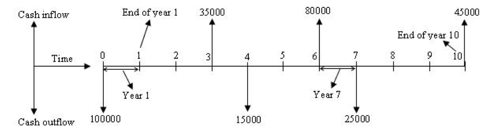
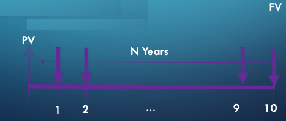

Economics as a Decision Support Structure
Contents
Economics as a Decision Support Structure#
Defining Alternatives#
Application of economics principles to assign value to an alternative
Decision principles used to select the best alternative based on value
Physical consequences#
Economic value – a basis for comparisons
Definitions/Concepts
Economic Analysis
Principles of engineering economics
Cash flows
Discounting methods
Cash Flow Diagrams#
Graphic representation of cash outflow (costs) and inflow (revenue).

Convention is revenue (benefit) is plotted upward, and expenses (costs) is plotted downward.
All cash flows during a year are usually lumped into sums occurring at the end of the year
Discounting Factors#
Discounting factor is a tool to convert a value at one date to an economically equivalent value at another date
All discounting problems can be expressed as combinations of two fundamental factors
Single-payment Compound-amount Factor
Single-payment Present-worth Factor
Present Value to Future Value#
The factor computes the number of monetary units (FV) that will accumulate in N years for every initial unit (PV) invested at a rate of return of i-percent.
Future Value to Present Value#
The factor computes the number of current monetary units (PV) that a future value (FV) is worth if the monetary units are invested at a rate of return of i-percent.
Other Factors#
Notice the cash flow diagram looks the same – it is a tool to move values along the time axis. All other diagrams can be determined by combinations of these two concepts.
Can either apply algebra to make the combinations, or just use simple computer programming (e.g. R)
Example#
Determine the present worth (PV) of a stream of annual payments, each payment is $100 for a period of 10 years. The discount rate is 3-percent per year.
Sketch a cash flow diagram

Implement computations for year 0 to 10 (11 increments in total)
# cash flow calculations
discount_rate = 0.03 # 3% interest rate
payments = [0,100,100,100,100,100,100,100,100,100,100]
present_value = [0 for i in range(11)] # empty list
for i in range(0,11):
present_value[i] = payments[i]*(1+discount_rate)**(-i)
#add up all the present values
print("Present Worth of 10 annual payments of $100 @ 3% interest is $",round(sum(present_value),2))
Present Worth of 10 annual payments of $100 @ 3% interest is $ 853.02
Discounting Techniques#
Refers to systematic application of discounting factors to compare alternatives
The 4 accepted techniques are:
Present worth method
Rate-of-return method
Benefit-cost ratio method
Annual-cost method
Each method produces the same evaluation of relative value